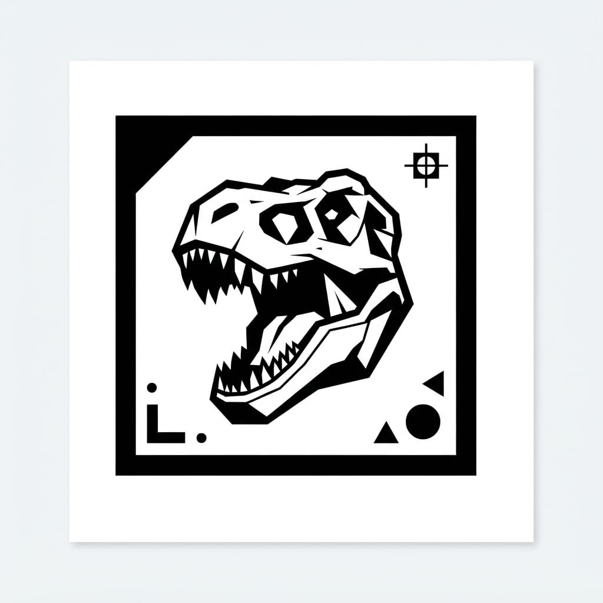
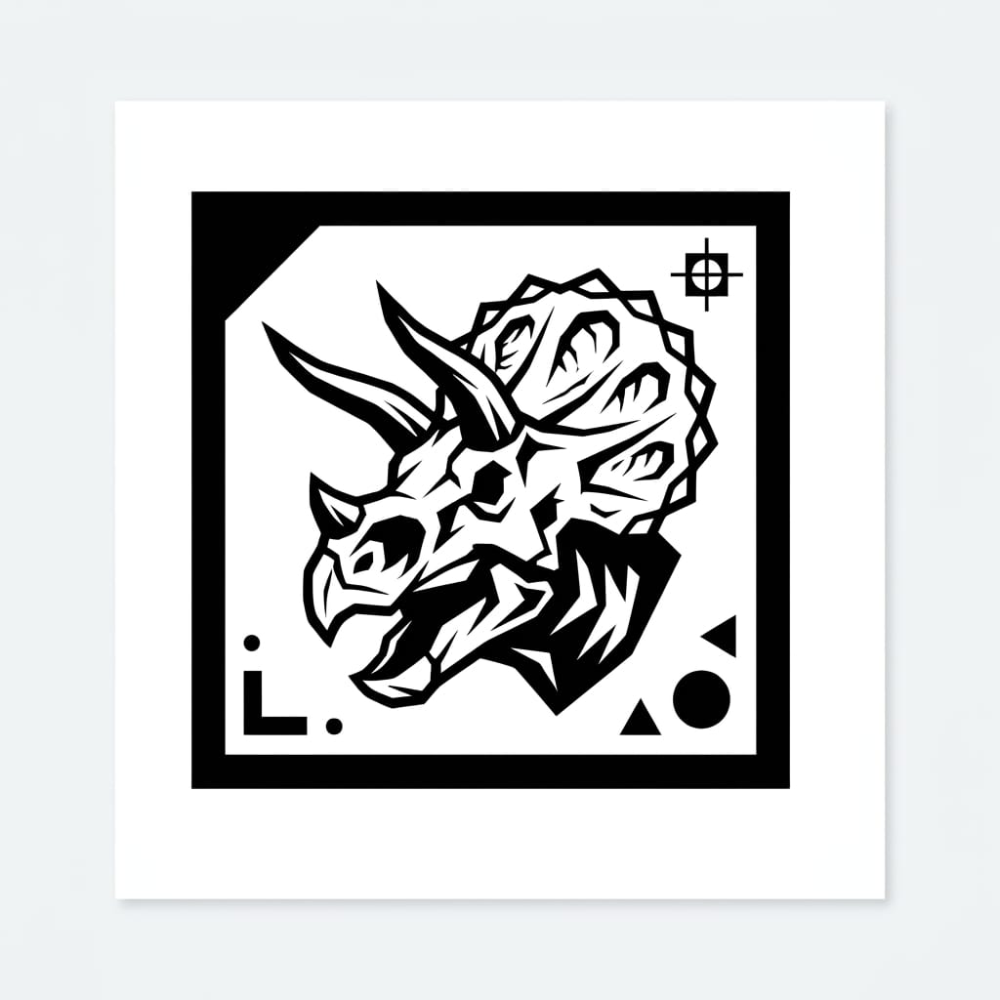
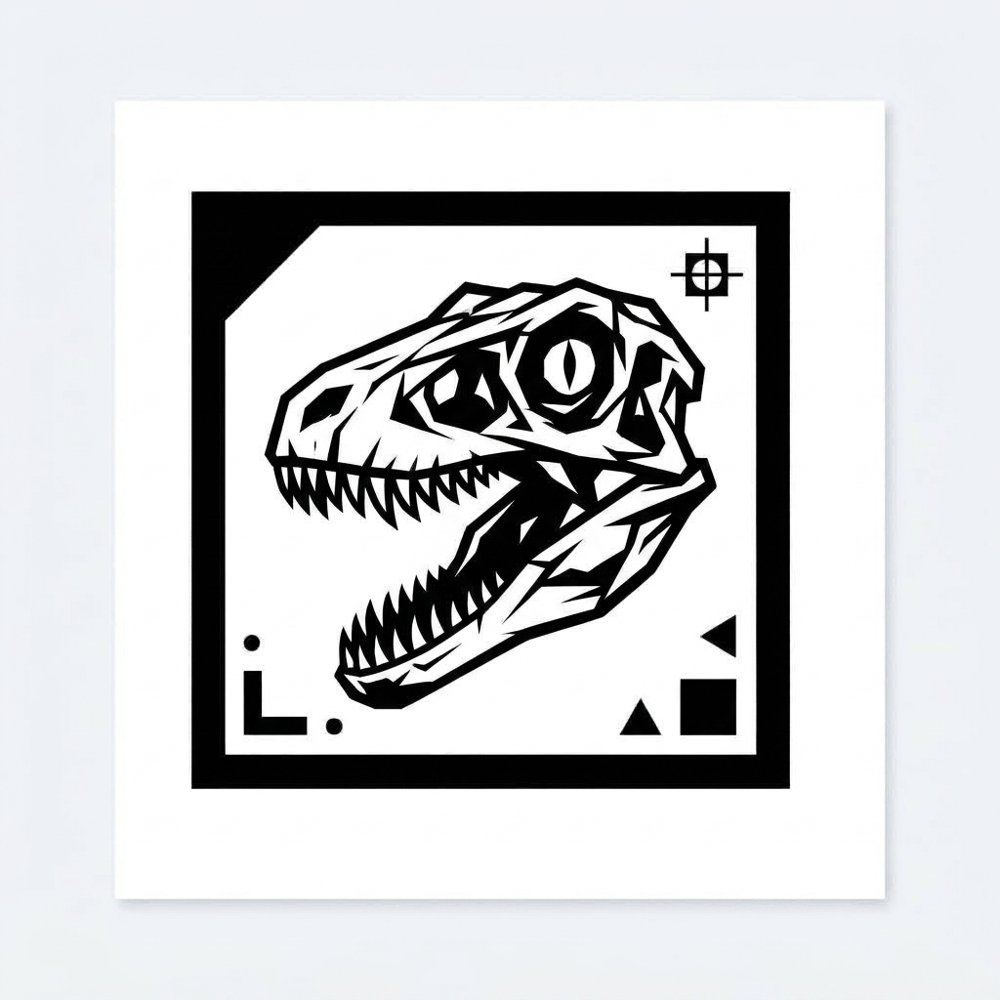
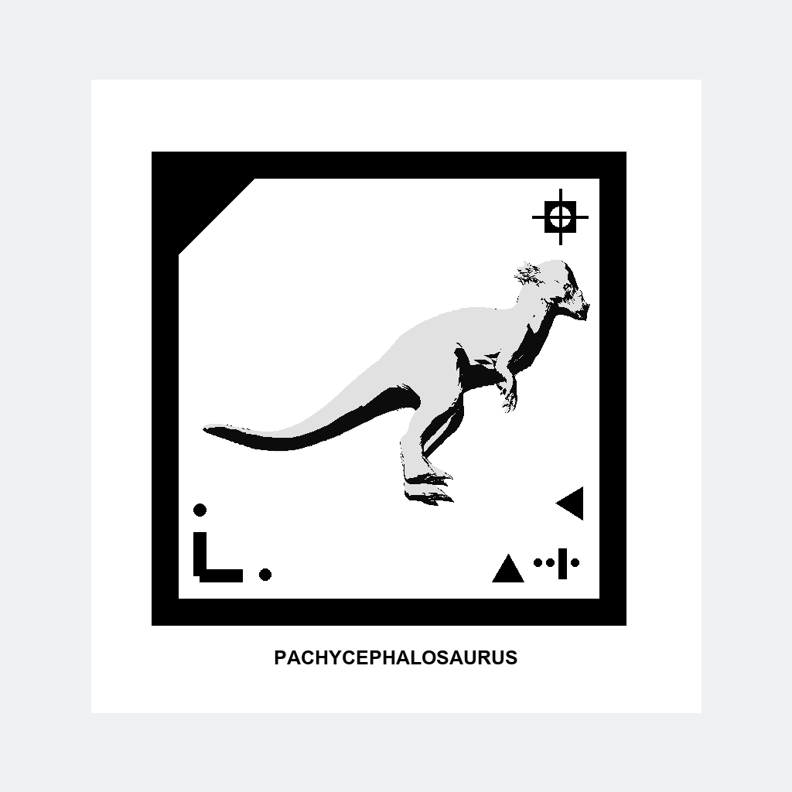
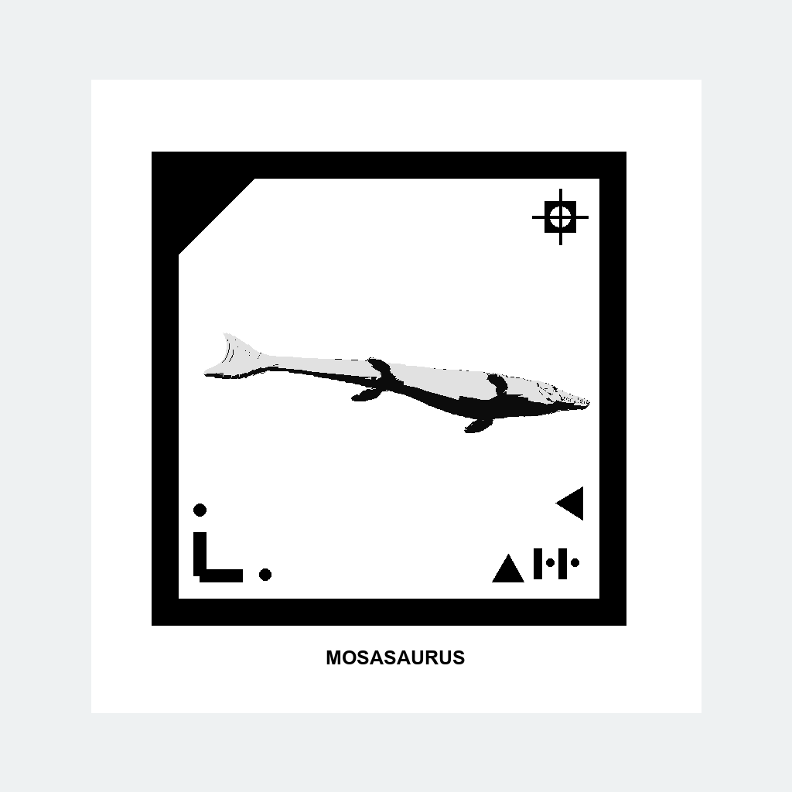
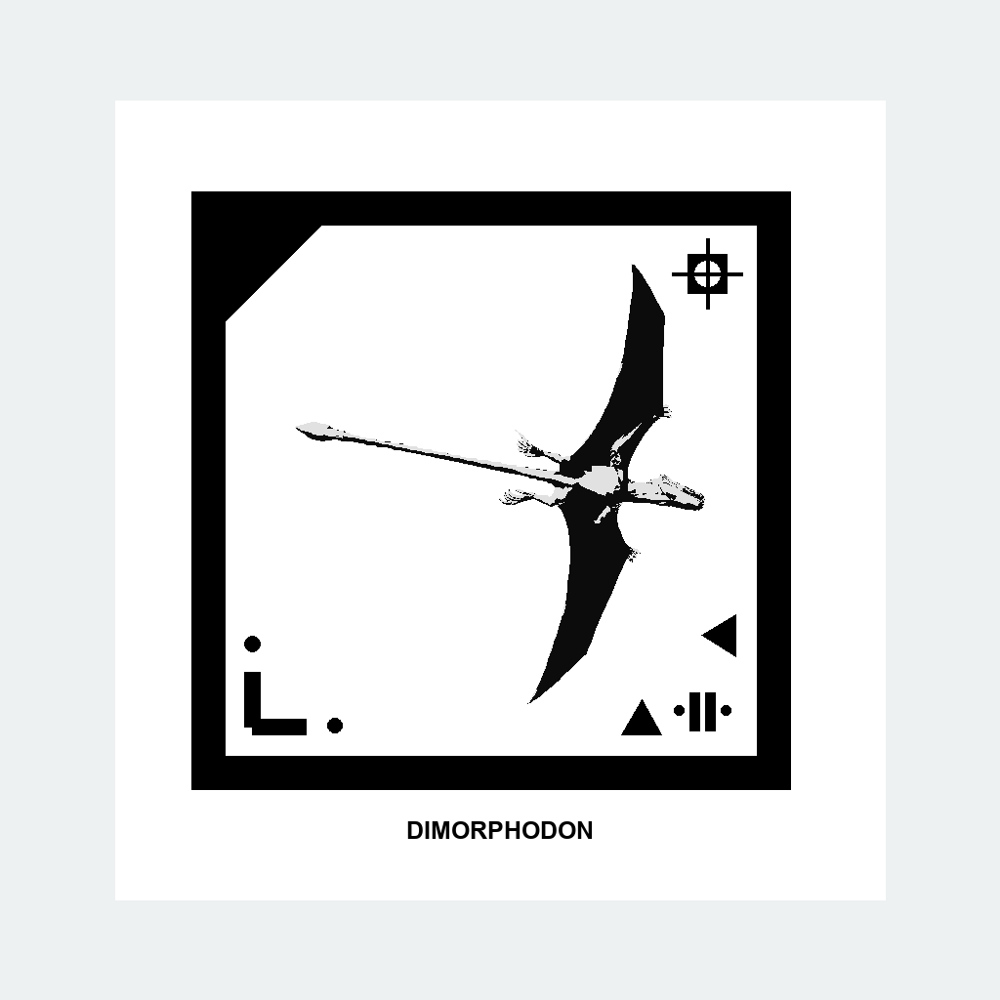
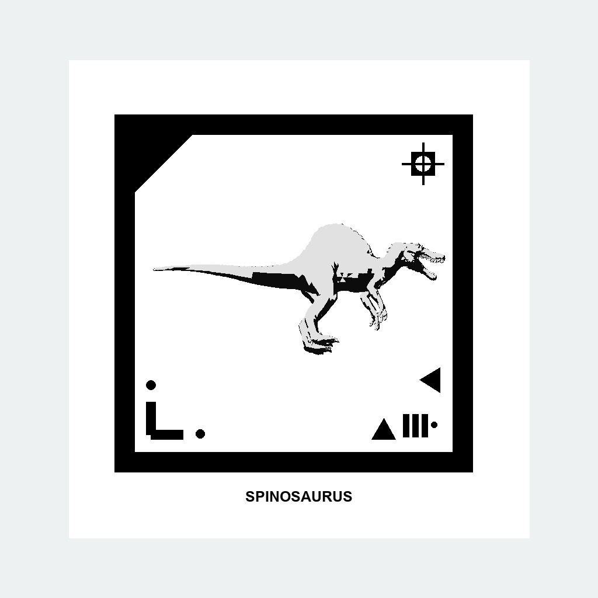
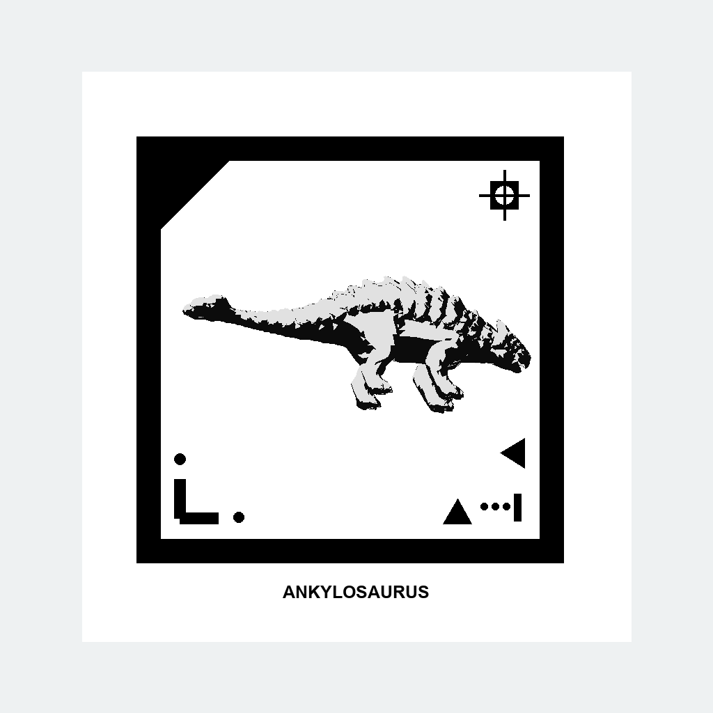

Abrir PDF A4 con ocho tarjetas a tamaño consistente
Imprime en papel mate al 100 %, sin deformar ni recortar las imágenes. También funcionan en blanco y negro. Mantén visibles todos los detalles de cada tarjeta.








Ilumina de forma uniforme. Usa una sola tarjeta a la vez y enfoca la imagen completa. El modelo sigue la tarjeta en 2D; pellizca para cambiar el tamaño y desliza para rotarlo.